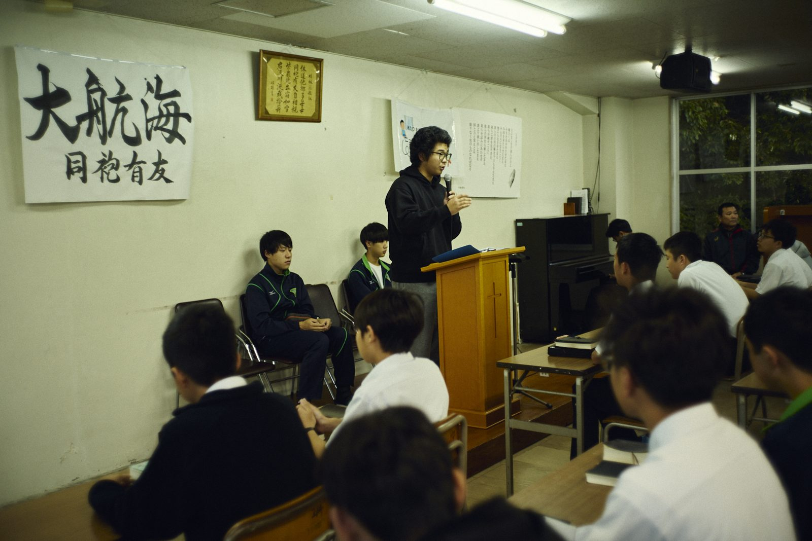
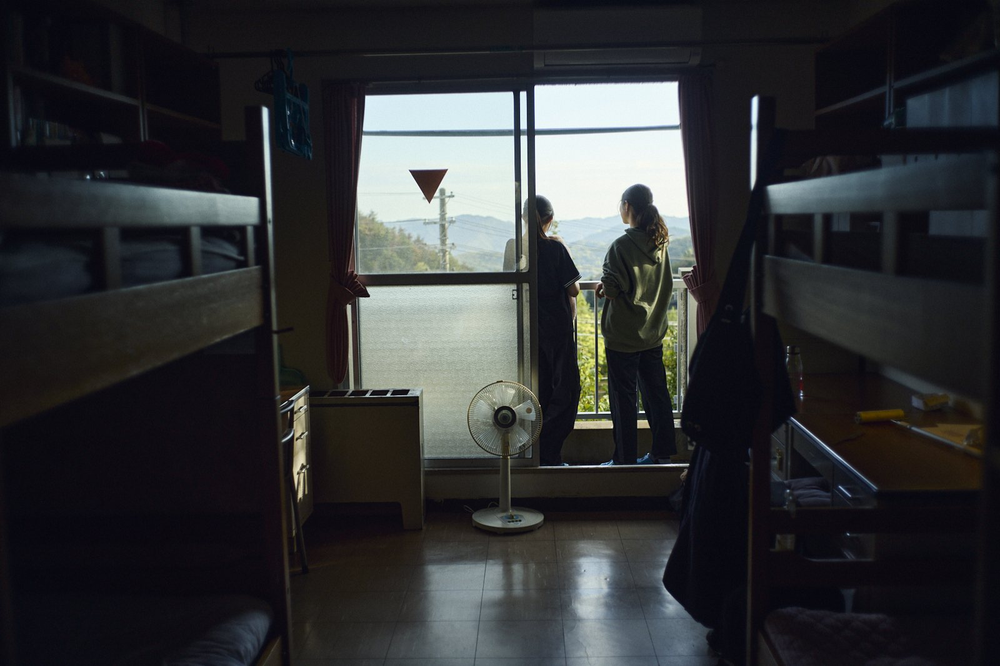
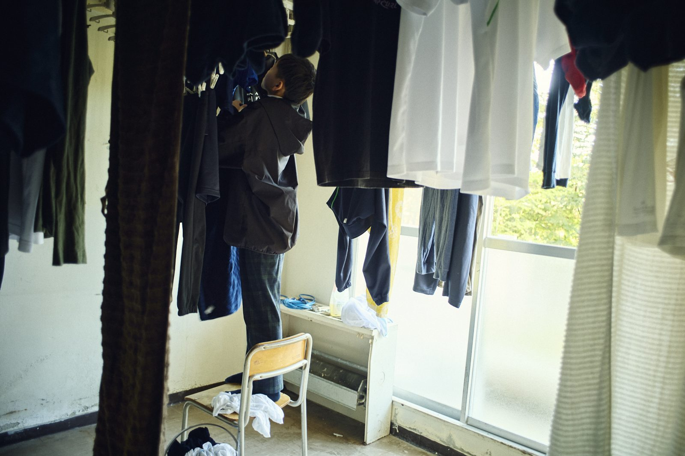
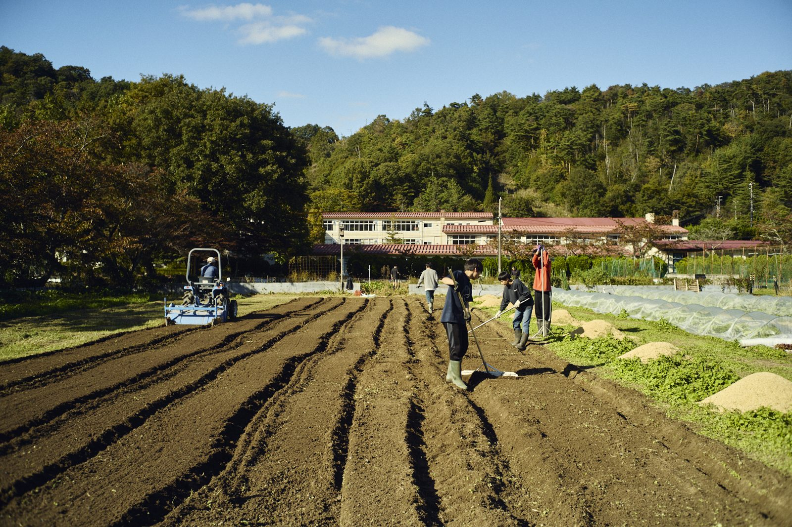
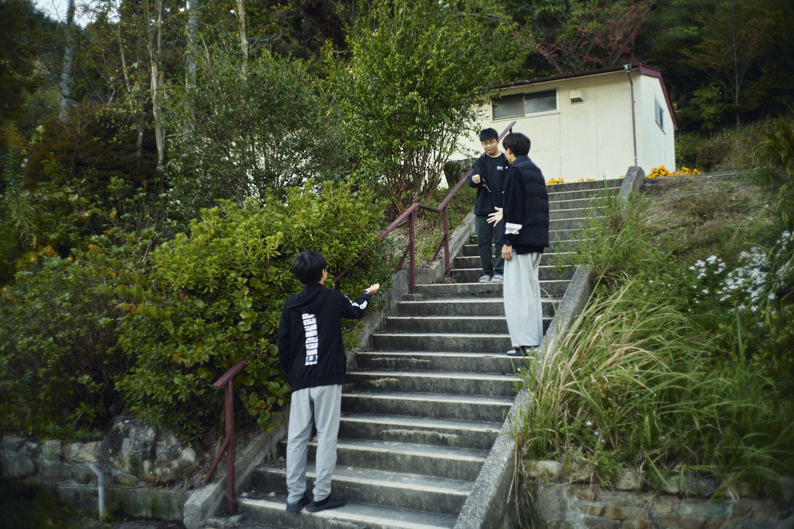
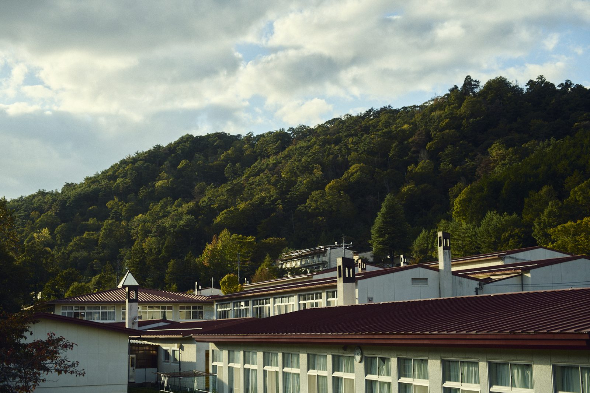
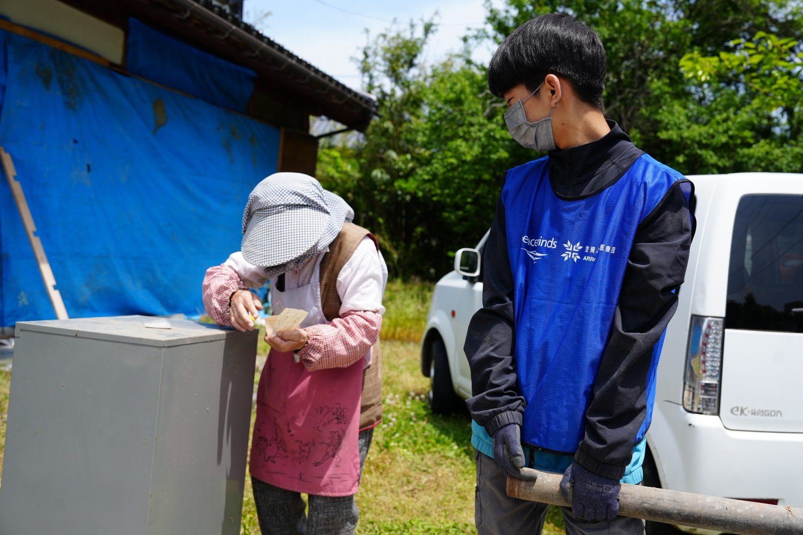

引っ込み思案だった子が、礼拝で3年間の学びを語った
小学校の頃は引っ込み思案で人影に隠れているような子でした。中学入学してすぐの5月頃、意外と人前で話すのが上手だと先生方が気づいてくださり、生徒代表のひとりとしてお話をしました。中学の卒業祈祷週では最終日の礼拝のお話を担当し、堂々とたくさんの人の前で話す姿を見て、親元にいたらできなかった成長だと思いました。
高2保護者・母広島三育学院 ／ 参加者特典
12歳、15歳でわが子を寮に送り出した保護者は、何が不安で、いま何を感じているのか。在校生の保護者が、これから入学を考えるご家庭に宛てて書いた言葉を集めました。

はじめに
広島三育学院は、キリスト教教育を土台とした寮教育を50年間続けてきました。寮で暮らすのは子どもですが、変わるのは子どもだけではありません。このページでは、在校生保護者へのアンケートに寄せられた声を、できるだけそのままの言葉でご紹介します。
数字で見る
回答した保護者のうち、各項目を選んだ割合（複数選択）
2026年10月実施・在校生保護者アンケート。掲載許可のあった回答（中1〜高3の保護者）を集計（2026年10月8日現在）。
子どもの変化

ゲームしか興味がなかった息子が、様々なことに意欲的になりました。
高1保護者・母知らなかった長所を発見しました。
高2保護者・母周りへの感謝の気持ちを表すようになりました。
中3保護者・母精神的に強くなりました。
高3保護者・母人前に立つことを嫌がらなくなった。
高3保護者・父自分自身と向き合う力が大きくなった。
高3保護者・母自分の将来を悩みながらも考えるようになった。
高2保護者・母「お母さんにやってもらう」という前提が無くなりました。
中1保護者・母電話で必ず「ありがとう」と言います。
高1保護者・母エピソード

小学校の頃は引っ込み思案で人影に隠れているような子でした。中学入学してすぐの5月頃、意外と人前で話すのが上手だと先生方が気づいてくださり、生徒代表のひとりとしてお話をしました。中学の卒業祈祷週では最終日の礼拝のお話を担当し、堂々とたくさんの人の前で話す姿を見て、親元にいたらできなかった成長だと思いました。
高2保護者・母
以前は外食や旅行にも行きたがらなかった息子が、「何でもやってみる！」と言うようになりました。学校の山で採った渋柿で、友達に教えてもらいながら干し柿作りにも挑戦。帰省した時、自分から部屋の床を拭き始めたことにも驚きました。寮で普段からしているので苦ではないようです。
高1保護者・母
入学後は人間関係や寮の生活が嫌だと何度も言っていました。それでも中学の卒業式では「中学校生活が凄く楽しかった」と言って卒業できた。だから高校も、今は嫌でもきっと楽しかったと思って卒業できると前向きで、いまは楽しい事探しをしているそうです。そういう我が子がたくましく感じました。
高1保護者・母親の変化
保護者自身の変化を一言で表してもらいました。
一緒には暮らしていませんが、以前より心の距離が近くなったと感じています。
高1保護者・母口論がだいぶ減り、ポジティブな会話が増えました。
高2保護者・父帰省したら1週間くらい話がつきず、夜中まで喋っています。
高2保護者・母自分がおもっている以上に、子供はできる。
中3保護者・母不安
不安がなかった保護者は、ほとんどいません。
一言アドバイス
かわいい子には旅をさせよとは、本当でした。我が子を12歳で旅に出すのは寂しかったですが、たくましく成長してくれました。
高2保護者・母
子どもとよくお話して、覚悟があるようであれば背中を押してあげてください。
中1保護者・母
可能な限りいろんな選択肢を示して、子どもさんの希望も含めてしっかり話し合うことが大切だと思います。
高3保護者・父
良いことも大変なことも含めて、人として育つ学校。
高3保護者・母
素敵な仲間と信頼できる大人と共に人間力を向上させる、国内留学へ行かせてみませんか？
高3保護者・父
一度学校へ見学に行き、見て頂きたい。私自身、過去に戻れるならこの学校で学びたい。
高1保護者・母
三育は、生涯の友と呼べる素晴らしい友に出会える学校です。
高2保護者・母
寮生活でどんどんたくましくなる子供を、益々誇りに思えるようになります。
高2保護者・母

実用メモ
「知っておけばよかった」という声から。
ソアン
地域と関わり、社会に貢献する力を育てる本校の探究活動です。

「社会に必要とされていること」を自分自身で探す視点を持つようになりました。
高2保護者・父「ありがとう」の一言でも重みがある、と言っていました。
高1保護者・母何かを購入するとき、ソアンで関わった地域のものを選んでいました。
中3保護者・母「楽しいから全部応募する！」と言うようになりました。
高1保護者・母学校見学・個別相談、資料請求を受け付けています。